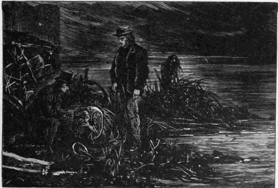
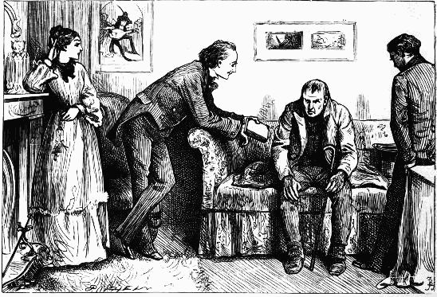
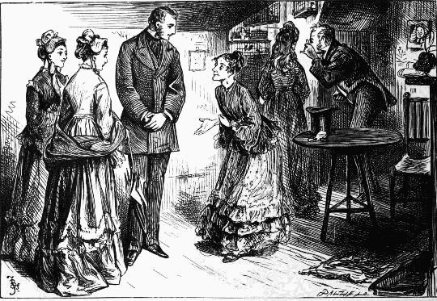
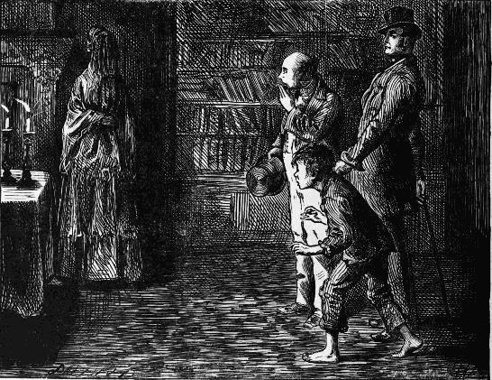
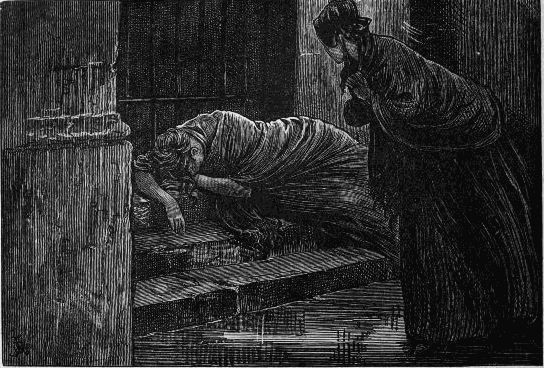

Hamlet's aunt betrays the family failing, and indulges in a soliloquy on "blood"—Chap. xxv.
Dora—Chap. xxvi.
"Here," drawing the cloth off with great pride and care, "are two pieces of furniture to commence with"—Chap. xxvii.
Mr. Micawber in his element—Chap. xxviii.
He was fast asleep; lying easily, with his head upon his arm, as I had often seen him lie at school—Chap. xxix.
"Give me breath enough," says I to my daughter Minnie, "and I'll find passages, my dear"—Chap. xxx
"Read it, sir," he said, in a low shivering voice. "Slow, please. I doen't know as I can understand"—Chap. xxxi.
"Take a word of advice, even from three foot nothing, try not to associate bodily defects with mental, my good friend, except for a solid reason"—Chap. xxxii.
Under the lilac tree—Chap. xxxiii.
I parted from him, poor fellow, at the corner of the street, with his great kite at his back, a very monument of human misery—Chap. xxxiv.
"Deuce take the man!" said my aunt sternly, "what's he about! don't be galvanic, sir!"—Chap. xxxv.
"I hardly ever take breakfast, sir," he replied with his head thrown back in an easy chair. "I find it bores me"—Chap. xxxvi.
"You have heard Miss Murdstone," said Mr. Spenlow, turning to me. "I beg to ask Mr. Copperfield, if you have anything to say in reply!"—Chap. xxxviii.
"Papa, you are not well. Come with me!"—Chap. xxxix.
I stood face to face with Mr. Peggotty!—Chap. xl.
"I wonder why you ever fell in love with me!" said Dora, beginning on another button of my coat—Chap. xli.
He caught the hand in his, and we stood in that connection, looking at each other—Chap. xlii.
Holding the pens—Chap. xliv.
"Then, I have got it, boy!" said Mr. Dick—Chap. xlv.
Mr. Littimer tells his story—Chap. xlvi.
 "Oh, the river!" she cried passionately. "Oh, the river!"—Chap. xlvii.
"When I can run about again, as I used to do, aunt," said Dora, "I shall make Jip race. He is getting quite slow and lazy"—Chap. xlviii.
"And the name of the whole atrocious mass is—Heep!"—Chap. xlix.
Rosa Dartle sprang up from her seat: recoiled, and in recoiling struck at her, with a face of such malignity, so darkened and disfigured by passion, that I had almost thrown myself between them—Chap. l.
"Approach me again, you—you—you Heep of infamy," gasped Mr. Micawber, "and if your head is human, I'll break it. Come on, come on"—Chap. lii.
"It is much better as it is!"—Chap. liii.
I have myself directed some attention, during the past week, to the art of baking—Chap. liv.
They drew him to my very feet—insensible—dead—Chap. lv.
I found Mr. Micawber sitting in a corner, looking darkly at the sheriff's officer who had effected the capture—Chap. lvii.
The Storm—Chap. lv.
I walked up to where he was sitting, and said, "How do you do, Mr. Chillip!"—Chap. lix.
For an instant, a distressful shadow crossed her face; but, even in the start it gave me, it was gone—Chap. lx.
I took Agnes in my arm to the back of her chair, and we both leaned over her—Chap. lxii.
"If a ship's cook that was turning settler, Mas'r Davy, didn't make offers fur to marry Mrs. Gummidge, I'm gormed—and I can't say no fairer than that!"—Chap, lxiii.
"Trotwood, you will be glad to hear that I shall finish the memorial when I have nothing else to do, and that your aunt's the most extraordinary woman in the world, sir!"—Chap. lxiv.
But one face, shining on me like a heavenly light by which I see all other objects, is above them and beyond them all—Chap. lxiv.
FIFTEEN ILLUSTRATIONS
BY J. McL. RALSTON
The Archbishop of Canterbury and the Danes—Chap. iv.
The escape of Queen Matilda from Oxford Castle—Chap. xi.
Hubert de Burgh and the Black Band—Chap. xv.
The Duchess of Gloucester doing penance—Chap. xii, Part Third
King John of France at the Battle of Poitiers—Chap. xviii.
Lambert Simnel—Chap. xxvi.
Sir Edward Howard—Chap. xxvii.
The Spanish Armada—Chap, xxxi., Third Part
Before he went away, the landlord came behind his chair—Chap. xxxiv., First Part
Mary Queen of Scots leaving France—Chap. xxxi.
The seizure of Guy Fawkes—Chap. xxxii., First Part
Oliver Cromwell and Ireton at the Blue Boar—Chap. xxxiii., Fourth Part
Execution of Sir Charles Lucas and Sir George Lisle—Chap. xxxiii., Fourth Part
Charles the First taking leave of his children—Chap, xxxiii., Fourth Part
[356]
[357]
SIXTY-ONE ILLUSTRATIONS
BY FRED BARNARD
"Who copied that!"—Chap. ii. 
I am introduced to Conversation Kenge—Chap. iii.
In an atmosphere of Borrioboola—Gha—Chap. iv.
The Lord Chancellor relates the death of Tom Jarndyce—Chap. v.
"We are not so prejudiced as to suppose that in private life you are otherwise than a very estimable man, with a great deal of poetry in your nature, of which you may not be conscious"—Chap. vi. 
The Growlery—Chap. viii.
"Alfred, my youngest (five), has voluntarily enrolled himself in the infant bonds of joy, and is pledged never, through life, to use tobacco in any form"—Chap. viii.
 "If I were in your place I would seize every Master in Chancery by the throat to-morrow morning, and shake him until his money rolled out of his pockets, and his bones rattled in his skin"—Chap. ix.
"If I were in your place I would seize every Master in Chancery by the throat to-morrow morning, and shake him until his money rolled out of his pockets, and his bones rattled in his skin"—Chap. ix.
Nemo—Chap. x.
"He wos wery good to me, he wos!"—Chap. xi.
"Why, do you know how pretty you are, child!" she says, touching her shoulder with her two fore-fingers—Chap. xii. 
Deportment—Chap. xiv.
"Honoured, indeed," said she, "by another visit from the wards in Jarndyce!"—Chap. xiv. 
"'I'm fly," says Jo. "But fen larks, you know. Stow hooking it"—Chap. xvi.
To my great surprise, on going in, I found my guardian still there, and sitting looking at the ashes—Chap. xvii.
"I have frightened you!" she said—Chap. xviii.
"Jo"—Chap. xvi.
"Who ud go and let a nice innocent lodging to such a reg'lar one as me!"—Chap. xix.
"I am grown up, now, Guppy. I have arrived at maturity"—Chap. xx.
Grandfather Smallweed astonishes Mr. George—Chap. xxi.
 "There she is!" cries Jo—Chap. xxii.
"O, you ridiculous child!" observed Mrs. Jellyby, with an abstracted air, as she looked over the despatch last opened; "what a goose you are!"—Chap. xxiii.
"Of all my old associations, of all my old pursuits and hopes, of all the living and the dead world, this one poor soul alone comes natural to me, and I am fit for"—Chap. xxiv
.
"What's gone of your father and your mother, eh!"—Chap. xxv.
"I believe you!" says Mrs. Bagnet. "He's a Briton. That's what Woolwich is. A Briton!"—Chap. xxvii.
The Ironmaster—Chap. xxviii.
Mr. Guppy's catechism—Chap. xxix.
"O my child, O my child!"—Chap. xxix.
"Never have a mission, my dear child"—Chap. xxx.
And he shivered in the window-seat with Charley standing by him, like some wounded animal that had been found in a ditch—Chap. xxx.
"My love, you know these two gentlemen!" . . . "Yes!" says Mrs. Snagsby, and in a rigid manner acknowledges their presence—Chap. xxxiii.
"I have come down," repeats Grandfather Smallweed, hooking the air towards him with all his ten fingers at once, "to look after the property"—Chap. xxxiii.
Puts his hand on his bald head again, under this new verbal shower-bath—Chap. xxxiv.
My mother—Chap. xxxvi.
"For I am constantly being taken in these nets," said Mr. Skimpole, looking beamingly at us over a glass of wine-and-water, "and am constantly being bailed out—like a boat"—Chap. xxxvii.
 We danced for an hour with great gravity—Chap. xxxviii.
We danced for an hour with great gravity—Chap. xxxviii.
She made no sound of laughter: but she rolled her head, and shook it, and put her handkerchief to her mouth, and appealed to Caddy with her elbow—Chap. xxxviii.
"You are to be congratulated, Mr. Guppy, you are a fortunate young man, sir"—Chap. xxxix.
Under the Lincoln's Inn Trees—Chap. xxxix
A bird of ill omen—Chap. xli.
"Turns the key upon her, mistress," illustrating with the cellar key—Chap. xlii.
Richard—Chap. xlv.
Here, against a hoarding of decaying timber, he is brought to bay—Chap. xlvi.
The cart is shaken all to pieces, and the rugged road is very near its end—Chap. xlvii.
Mr. Bucket urging a sensible view of the case with his fat forefinger—Chap. xlix.
Peepy was sufficiently decorated to walk hand-in-hand with the professor of deportment—Chap. l.
"Esther, dear," she said very quietly, "I am not going home again"—Chap. li.
"Has'nt a doubt—zample—far better hang wrong f'ler than no f'ler"—Chap. liii.
"Can you make a haughty gentleman of him . . . the poor infant!"—Chap. liv.
He puts his hands together . . . and raising them towards her breast, bows down his head, and cries—Chap. lv.
Mr. Bucket in Lady Dedlock's boudoir—Chap. lvi.
In the brickmaker's cottage—Chap. lvii.
The old housekeeper weeping silently; Volumnia in the greatest agitation, with the freshest bloom on her cheeks; the trooper with his arms folded and his head a little bent, respectfully attentive—Chap. lviii.
She lay there, with one arm creeping round a bar of the iron gate, and seeming to embrace it—Chap. lix. 
"Miss Summerson," said Mr. Vholes, very slowly rubbing his gloved hands, . . . . "this was an ill-advised marriage of Mr. C's"—Chap. lx.
"To which! say that again," cried Mr. Smallweed, in a shrill, sharp voice—Chap. lxii.
"Get out with you. If we ain't good enough for you, go and procure somebody that is good enough. Go along and find 'em"—Chap. lxiv.
"But I never own to it before the old girl. Discipline must be maintained"—Chap. lxvi.
Volumnia's devotion to Sir Leicester—Chap. lxvi.